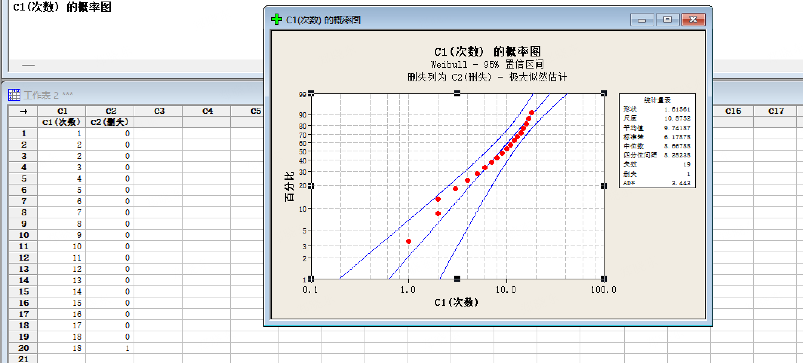

💡 今日知识点：右删失（Right Censoring）
测试停止时，一部分样品还没失效——不是它们不会失效，而是"我们没测到那个时候"。
如果直接忽略它们，会高估产品寿命。
🔬 传音场景（最关键概念）
W-795 跌落 10 次，22 台全过 → 这 22 台是"右删失"的。
❌ 错误做法：只看 28 台失效的 → 结果偏大
✅ 正确做法：用 Minitab"分布分析(右删失)"，22 台标记为删失
【理解】
"删失"= 我们知道它至少活到了测试结束，但不知道它到底能活多久。
⚠️ 为什么不能扔掉？——扔掉的话只剩"短命"的数据，算出来的寿命会偏低。
【操作】
第一步：数据列准备
- C1 = 首次失效次数（全过填 10 或 8）
- C2 = 删失标记（0=失效, 1=全过/删失）
- 推荐用数字 0/1，比 F/C 文本更稳定
第二步：菜单路径
统计 → 可靠性/生存 → 分布分析(右删失) → 参数分布分析(P)...
第三步：设置
- 变量选 C1
- 删失列选 C2，删失值填 1
- 假定分布选 Weibull
- 结果→百分位数=10
【常见报错排查】
🔴 "Weibull 要求所有数据 > 0" → 检查 C1 是否有 0（全过不能填 0！）
🔴 "删失值不在数据中" → C2 是文本型，Minitab 15 解析不稳定 → 新建一列填 0/1
🔴 删失对话框灰色 → Minitab 15 已有数据后不可改列类型 → 直接新建列
📋 W-795 跌落数据表（12台，复制到 C1/C2）
| 行号 |
C1(次数) |
C2(删失) |
备注 |
| 1 |
4 |
0 |
第4次跌落失效 |
| 2 |
4 |
0 |
第4次跌落失效 |
| 3 |
4 |
0 |
第4次跌落失效 |
| 4 |
5 |
0 |
第5次跌落失效 |
| 5 |
5 |
0 |
第5次跌落失效 |
| 6 |
5 |
0 |
第5次跌落失效 |
| 7 |
5 |
0 |
第5次跌落失效 |
| 8 |
5 |
0 |
第5次跌落失效 |
| 9 |
10 |
1 |
10次全过，右删失 |
| 10 |
10 |
1 |
10次全过，右删失 |
| 11 |
10 |
1 |
10次全过，右删失 |
| 12 |
10 |
1 |
10次全过，右删失 |
💡 0=失效，1=删失/全过。若 C2 列类型被锁，新建一列填 0/1 即可。

▲ Weibull 概率图：包含右删失数据的跌落测试案例，形状参数 β=1.62，尺度参数 η=10.87